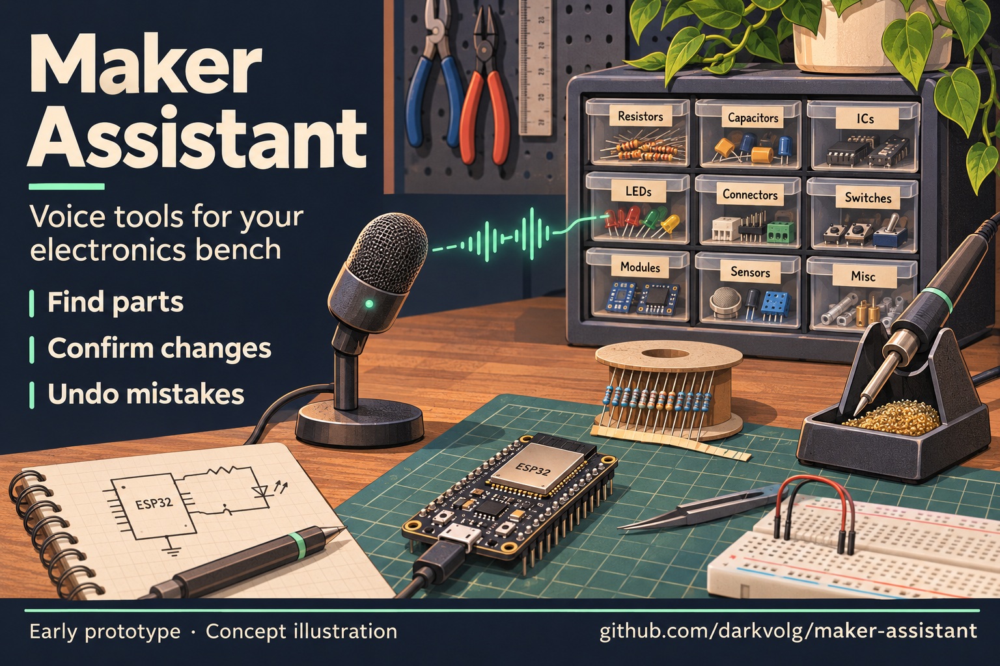

Цель — найти 2–3 человека, которым действительно нужен голосовой учёт радиодеталей. Один пост, затем две недели обратной связи. Количество звёзд само по себе не доказывает полезность.
Статус: подготовлено, на Reddit не опубликовано. Требуется доступ к аккаунту Reddit. Из этой страницы ничего не отправляется автоматически.

Скачать картинку · Промпт картинки · Репозиторий
Первый вариант — r/SideProject. Это сообщество для представления своих проектов. В доступном списке правил отдельные правила сообщества не перечислены; общие ограничения Reddit на спам действуют. Перед отправкой проверить актуальные правила и закреплённые темы. Один содержательный пост со ссылкой на исходники.
r/LocalLLaMA пока не использовать: правила ограничивают преимущественно ИИ-созданные тексты и код. r/opensource также не подходит: объяснение изменений правил. Не нужно массово дублировать публикацию в нескольких сообществах.
Ссылку на GitHub оставить в самом тексте. Иллюстрация необязательна; в обсуждении полезнее реальные результаты испытаний. Не выдавать её за скриншот программы.
Заголовок: I built a local voice tool for electronics inventory. Would you use it at your bench?
Я инженер по автоматизации, дома занимаюсь электроникой. Делаю Maker Assistant с помощью ИИ и хочу понять, полезна ли идея кому-то, кроме меня.
Идея простая: голосом узнать, где лежит деталь, записать расход и поставить таймер, пока руки заняты. Сейчас можно найти резисторы, сказать «взял четыре», подтвердить списание и затем отменить его. Остатки и журнал хранятся в SQLite.
Распознавание — faster-whisper, локальная озвучка Windows — SAPI. Ollama с Qwen отвечает за свободные запросы и разговор; базовым командам модель не нужна. Есть отдельные английский и русский профили. Для локальной работы платный API не нужен; первая установка требует скачивания зависимостей и моделей. Интернет-озвучка — отдельная опция.
Вдохновлялся always-on-ai-assistant от disler. Здесь упор на поиск деталей, расход, подтверждение и отмену. Не заявляю замену полноценного складского учёта или универсального помощника.
Локально прошли 56 автоматических тестов и два голосовых теста: настоящая Whisper распознала синтезированные русские и английские фразы. Остаток в каждом тесте изменился 150 → 146 → 150. Это ещё не проверка человеческой речи, акцентов и шума. Установка пока ручная, голосовой режим прежде всего для Windows, часть диагностики и настроек на русском.
Исходники открыты под MIT. Если у вас есть ящики с радиодеталями: сэкономил бы голос время? Что мешало бы пользоваться этим за вашим столом? Хочу найти несколько человек для испытаний до добавления новых функций.
Открыто указываем: код и английский текст подготовлены с помощью ИИ, картинка — сгенерированная иллюстрация.
Английский запуск: run-english.bat. Демонстрационный склад импортируется отдельно командой из английского README. Русский запуск: прежний run.bat. Русский склад и настройки не заменяются.
Для будущего видео: записать настоящий экран с поиском, подтверждением списания и отменой. Обозначить демонстрационный склад. Сгенерированное видео не использовать как доказательство работы.
После публикации записать ссылку и дату. Через две недели оценить: кто установил, кто повторил сценарий, какие ошибки нашёл, хочет ли использовать дальше. Если никто не попробовал — не расширять проект автоматически.